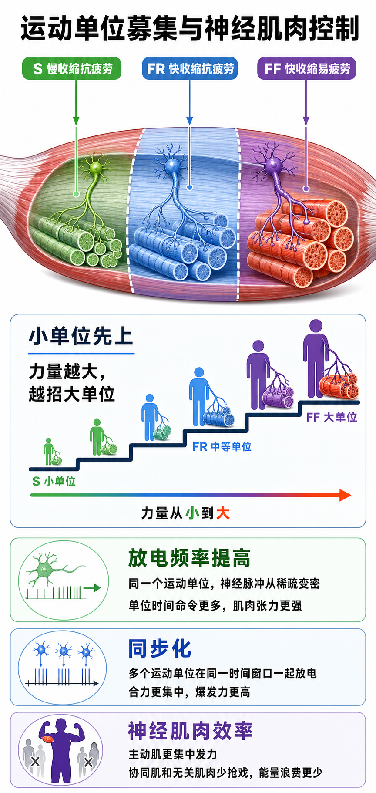

Day 27 · 运动单位募集与神经肌肉控制深化
一句话总结
力量不是“肌肉越多越会用”，而是神经系统先按大小原则从小运动单位招到大运动单位，再用更高放电频率和更好同步化把力量调上去，同时减少无关肌肉抢戏。 肌肉像发动机，神经控制像油门、换挡和车队调度。

核心要点
-
运动单位类型: S、FR、FF 分别代表慢耐久、中等平衡、快爆发易疲劳。
先抓结论: 运动单位分类不是背字母，而是判断“谁耐久、谁爆发、谁容易累”。
S 单位
S = slow，慢收缩抗疲劳。像省电小灯，输出小但能亮很久，适合站立控制、轻松有氧和低力姿势维持。
FR 单位
FR = fast fatigue-resistant，快收缩抗疲劳。像中档发动机，速度比 S 快，续航比 FF 好，适合中等强度反复发力。
FF 单位
FF = fast fatigable，快收缩易疲劳。像涡轮冲刺，力量最大、速度最快，但很快累，适合短时爆发和大重量关键段。
常见误解类型 输出特点 训练场景 S 慢、力量小、抗疲劳强 站姿、慢跑、热身、技术控制 FR 快、力量中、较抗疲劳 中等重量多次、间歇反复输出 FF 最快、力量大、易疲劳 1RM、跳跃、冲刺、爆发举 ❌以为快单位都一样。✅其实 FR 和 FF 都快，但 FR 更耐疲劳，FF 更偏峰值爆发。
-
大小原则: 低力先募集小单位，力量需求升高才逐步拉上大单位。
先抓结论: 身体很省电，不会一开始就把最强、最容易累的单位全部叫上。真实例子
字面意思
大小原则(Size Principle)指运动单位按阈值从小到大被募集。小单位阈值低，先上；大单位阈值高，后上。
大白话
像搬东西。拿纸杯不用叫全队，搬冰箱才叫更多人，最后才把最壮但最容易累的人叫来。
训练含义
大重量、高速度意图、接近力竭都能提高高阈值单位参与。轻重量也能招到大单位，但通常来得更晚。
二头弯举前几次很轻松时，小单位足够。越接近力竭，身体才逐步叫上更大单位，所以最后几次明显更抖、更慢。
常见误解❌以为轻重量永远练不到 II 型相关高阈值单位。✅其实接近力竭时也可能参与，只是效率、疲劳和训练目标要分清。
-
频率编码: 同一个运动单位发放更密，肌肉张力可以继续升高。
先抓结论: 力量变大不只靠“多招人”，还靠“命令发得更密”。底层机制
字面意思
频率编码(rate coding)是运动神经元单位时间内发放动作电位的频率。频率越高，肌纤维接到收缩命令越密。
大白话
像敲鼓从慢拍变快拍。人没变多，但节奏更紧，合力更容易叠上去。
训练含义
1RM 起杠、跳跃起跳、冲刺第一步都需要高频神经输出。疲劳后频率掉，动作就慢、散、卡。
单次脉冲引发一次肌纤维张力反应。脉冲间隔缩短时，前一次张力还没完全回落，后一次又来，整体张力更高。
常见误解❌以为达到某重量后只能再招更多单位。✅其实已募集单位也能通过更高放电频率提高输出。
-
同步化: 训练让更多运动单位在关键时间窗口一起放电，爆发力更容易上来。
先抓结论: 爆发动作怕“各干各的”，需要很多单位在同一瞬间更整齐地贡献力量。真实例子
字面意思
同步化是多个运动单位放电时间更协调。它不是所有单位永远同一秒开火，而是关键输出窗口更集中。
大白话
像划龙舟。每个人都有力，但桨一起下水，船才冲得快。
训练含义
跳箱、药球抛、抓举、高质量重单次都更依赖同步化。疲劳过高时，动作节奏散，爆发训练质量下降。
同样会深蹲的人，测试纵跳时差别可能不在肌肉围度，而在能否把髋、膝、踝和相关运动单位在极短时间内一起拉起来。
常见误解❌以为爆发力只等于肌肉大。✅其实高阈值单位参与、频率编码、同步化和技术路径都在决定峰值输出。
-
神经肌肉效率: 主动肌更集中出力，协同肌会帮忙，无关肌肉少浪费能量。
先抓结论: 练熟不是“全身更紧”，而是该紧的更准，不该抢戏的少抢。真实例子
字面意思
神经肌肉效率是神经系统用更少多余激活完成更有效动作输出。主动肌、协同肌、稳定肌分工更清楚。
大白话
像团队协作。主力负责推进，辅助负责稳定，反方向拉扯的人少了，同样用力就更有效。
训练含义
新手弯举耸肩、腰后仰、前臂乱紧；熟练后肱二头肌更集中，肩和躯干只做稳定，不乱代偿。
卧推初学者常把肩耸起、手腕乱晃、脚蹬地不稳。技术熟练后，胸大肌、三头肌、三角肌前束和背部稳定更像同一队伍。
常见误解❌以为所有肌肉同时越紧越安全。✅其实过多无关紧张会浪费能量、干扰路线，也可能让动作更僵。
-
去募集: 力量需求下降时，高阈值大单位通常先退出，系统按需降档。
先抓结论: 神经系统不只会加码，也会撤人；控制好撤人，动作结束才稳。常见误解
发生什么
当外部负荷变轻、动作接近完成或张力需求下降，身体会逐步减少运动单位参与，尤其先撤成本高的大单位。
动作例子
硬拉最难点需要更高募集。锁定后外部力矩变小，系统会降档，让动作从最大输出转向稳定控制。
训练含义
离心下降、落地缓冲、放下杠铃，都需要平稳去募集。突然松掉会让关节和组织承受不必要冲击。
❌以为募集只关心“怎么上力”。✅其实怎么降低输出、怎么稳住结束，也属于神经控制。
-
后续课程连接: Day27 是 Day34 神经适应和爆发训练的前置底层逻辑。
先抓结论: 早期力量增长、爆发训练、抗阻编程，很多都要回到“募集、频率、同步、效率”。训练含义
接 Day34
新手训练前几周力量涨很快，常见原因是运动单位募集更好、放电频率更高、同步化更强，而不是肌肉已经明显变大。
接爆发训练
爆发训练要保速度和高质量休息，因为目标是高阈值单位快速加入并同步输出，不是把每组练到完全没速度。
接编程变量
重量、速度意图、次数、组间休息会改变主要神经刺激。相同动作，用法不同，适应不同。
想练最大力量，重负荷和长休息优先；想练爆发，速度和低疲劳优先；想练肌肥大，中等负荷接近力竭也能让高阈值单位参与。
常见误区
❌很多人以为新手力量涨就是肌肉长大。✅其实早期常先来自神经适应: 募集更好、频率更高、动作效率更高。
❌很多人以为轻重量永远练不到高阈值单位。✅其实接近力竭时也可能参与，只是疲劳更大，训练目标要匹配。
❌很多人以为爆发训练越累越好。✅其实爆发训练更怕速度掉和同步质量下降，需要充分休息保输出。
记忆口诀
小先大后，低招高频；同发更爆，少抢更省。 先按大小原则招人，再用频率编码加力，同步化冲峰值，神经肌肉效率减少浪费。
翻转卡复习
实操关联
- 最大力量: 用高负荷、低次数、长休息，优先练高阈值募集和高频神经输出。
- 爆发训练: 用速度意图、充分休息、少量高质量组，优先练同步化，不追求酸胀。
- 肌肥大: 中等负荷接近力竭，也能让大单位参与；但要控制动作质量和恢复成本。
- 技术学习: 用低到中等负荷练神经肌肉效率，让主动肌清楚发力，协同代偿减少。
- 康复训练: 先恢复低阈值控制和稳定，再逐步提高负荷与速度，不急着冲 FF 单位。